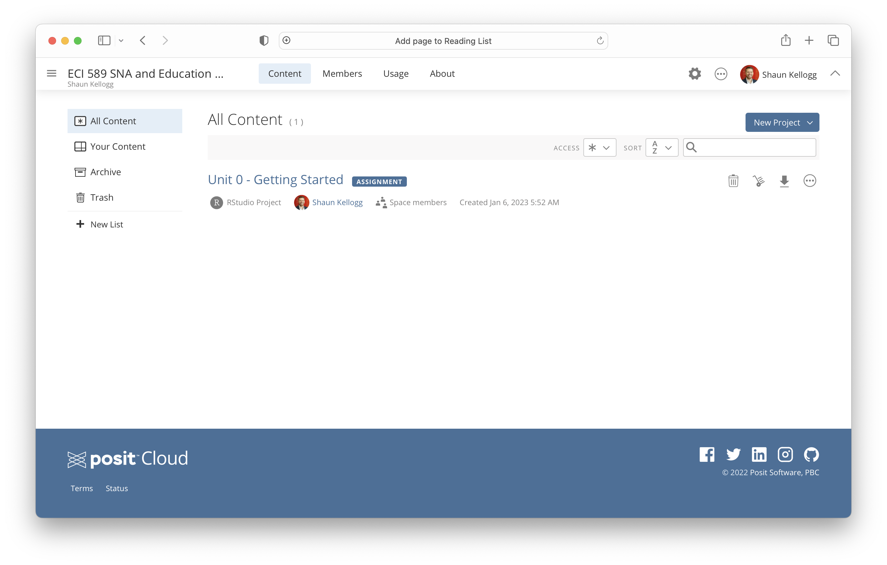

Network Analysis Toolkit
Graduate Certificate in Learning Analytics
Your final task this week is to prepare your Learning Analytics & Text Mining Toolkit by setting up and getting familiar with the texts, software, and supplementary learning resources for this course. Depending on prior experience with R, this may take you as little as an hour or as long as several days over the next few weeks.
Course Texts
Our required course text is freely available online. Throughout this course, you will also be asked to locate self-selected readings related to SNA topics covered throughout the semester. I recommend that you configure Google Scholar to allow automatic access to the NC State Library’s journals and databases.
Required
Course readings will draw primarily from Carolyn's excellent SNA and Education book and will be supplemented by self-selected articles:
- Social network analysis and education: Theory, methods & applications. A digital copy is freely available through NCSU Library.
Optional
Social Network Theory and Educational Change. A physical copy is available through the NCSU Library.
Mixed methods social network analysis: Theories and methodologies in learning and education. A digital copy is available through the NCSU Library.
Static and Dynamic Network Visualization with R is available free online at http://kateto.net/network-visualization.
R for Data Science is available free online at https://r4ds.had.co.nz
Data Science in a Box by Mine Çetinkaya-Rundel at Duke University at https://datasciencebox.org
Learning analytics goes to school: A collaborative approach to improving education is available to purchase on Amazon and other outlets.
Learning analytics explained is available free through the NCSU Library.
Course Software & Resources
Required
This course will require R (https://www.r-project.org), an open-source language and computing environment for data manipulation, analysis, and visualization; and R Studio (https://www.rstudio.com), an integrated development environment (IDE) for R which includes an R console, syntax-highlighting editor, and tools for plotting, packages, and workspace management.
R and RStudio can now also be accessed directly in the cloud with Posit Cloud (https://posit.cloud), a lightweight, browser-based solution that requires no hardware installation or configuration. If you're new to R, I highly recommend using Posit Cloud for this course. Visit the Sign Up page to create a new account that you will use throughout the course. After signing up, simply click this link to access our ECI 589 Posit Cloud workspace.
For those new to R and RStudio, I’ve recorded an onboarding video with a Getting Started walkthrough from ECI 586 designed to orient you to our data analysis assignments and to R, RStudio, and/or RMarkdown, which we’ll be using to complete those assignments.
To access and complete the Getting Started walkthrough, follow this link to our ECI 589 Posit Cloud workspace and you should see the following if you are logged in.

If you have not completed ECI 586 and are relatively new to R and R Studio, you are also required work though independently the following chapters from Data Science in Education Using R:
Getting Started with R and RStudio covers downloading R and RStudio, RStudio layout and customization, and writing and running code in RStudio.
Foundational Skills introduces RStudio Projects and key building blocks of the R language including packages, functions, data, objects, and operators.
Finally, Katherine Ognyanova, http://www.kateto.net/, also has a nice introduction to R from her Introduction to R and network analysis workshop that I recommend and that we'll also be drawing from for the course.
Optional
Posit Primers are an excellent resource and for those new to R, you’ll be using these tutorials as an alternative to the Independent Analysis unit assignments for those who completed ECI 586 or have prior experience with R.
Git and GitHub are popular tools for version control, file hosting, and collaboration. Like R, there is a bit of a learning curve but Jenny Bryan’s Happy Git and GitHub for the useR will get you up and running in no time.
We’ll be using data pulled from the Twitter Developer Platform. See complete details in the final task for this week.
While I will be R for data visualization throughout this course, in practice I sometimes use tools like NodeXL or Gephi, the leading visualization and exploration software for all kinds of graphs and networks. Gephi is open-source and free. Gephi runs on Windows, Mac OS X and Linux.
LinkedIn Learning offers tutorials and training courses for Learning R, Learning the R Tidyverse, Social Network Analysis in R, and Data Visualization in R. The full catalogue of LinkedIn Learning course and resources is available at no charge to NC State students.
Troubleshooting
Learning a programming language like R (or any foreign language for that matter) will inevitably be a little frustrating at first. Even experienced R developers like Hadley Wickham get frustrated:
“It's easy when you start out programming to get really frustrated and think, ‘Oh it's me, I'm really stupid,’ or, ‘I'm not made out to program.’ But, that is absolutely not the case. Everyone gets frustrated. I still get frustrated occasionally when writing R code. It's just a natural part of programming. So, it happens to everyone and gets less and less over time. Don't blame yourself. Just take a break, do something fun, and then come back and try again later.”
When feeling stuck or like banging your head against your desk, there are several options for seeking out help within and beyond this course:
Course Forums & Email: Including this general software troubleshooting forum, we will have forums for each assignment. You'll likely have similar questions as your peers, and you'll likely be able to answer other peoples' questions too so I encourage you to use these forums. Unlike most of my apps and social media accounts, I actually have notifications enabled. Also, do not hesitate to email me directly as well.
NCSU Library Services: The Data & Visualization group is an incredible asset for NC State students. Though the library’s website, you can access and enroll in workshops, find resources, and chat or schedule a Zoom appointment to get R help.
Social Media: If you use Twitter, you can also post R-related questions and content with the #rstats hashtag. One of the things I most value about the R in general is that the R community is exceptionally helpful.
The Interwebs: Aside from Google of course, StackOverflow and the RStudio Community will likely become tried and true tools in your text mining toolkit. In fact, I’d wager that the majority of Google searcher will likely direct you to one of these two sites. Note that when search Google, it sometimes helps to include “rstats” in your query.